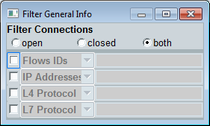
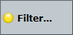

Some views provide a flow filter, for example the view "TCP Analysis" and the view "IP Connectivity". The filter allows you to restrict the evaluation to a certain subset of connection flows. Flows that do not match the filter criteria are ignored and do not contribute to the displayed results.
There is only a single set of filter settings. It applies to all views that support the flow filter. So all views supporting the filter show results based on the same set of flows.
To check whether filtering is supported by a view, check the hotkeys of the view. If you see a hotkey "Filter", the view supports filtering.
- Connection state (open, closed, both)
- Flow ID
- IP address (checks source and destination address)
- L4 protocol, L7 protocol
- Application
- Country (information only available with R&S CMW-KM052)
- Source port, destination port
For the connection state, you choose one of the three values.
For any other property, you define a filter expression. A filter expression can contain several criteria, separated by colons. The order of the criteria is irrelevant. A single criterion consists of a value, optionally preceded by an operator. The following table provides an overview of the operators.
Operator | Effect | Notes |
|---|---|---|
none | Include value/substring | Numeric value: include/exclude the defined value String: include/exclude strings containing the defined substring, not case-sensitive |
! | Exclude value/substring | |
< | Include smaller values | Only for numeric properties, not for strings Maximum one < and one > allowed per filter expression |
> | Include greater values |
- Flow ID expression: 5, 8
Result: only 5 and 8 - Flow ID expression: !15, !23
Result: all except 15 and 23 - Flow ID expression: >15, <23
Result: from 16 to 22 - Flow ID expression: 5, >9, !15, <18
Result: 5, 10, 11, 12, 13, 14, 16, 17 - IP address expression: 74.6, !74.6.105.9
Result: At least one address contains 74.6. No address contains 74.6.105.9. - IP address expression: >74.6.105.9
Result: At least one address is greater than 74.6.105.9. Example: 74.7.50.0 is greater, 74.6.100.6 is less than 74.6.105.9. - L7 protocol expression: !dhcp, !dns, !icmp
Result: The layer 7 protocol name contains none of the three substrings. - L7 protocol expression: !ssl
Result: The layer 7 protocol name contains not ssl.
To access the filter settings, press the hotkey "Filter". The hotkey is only present if the current view supports filtering.
A dialog box opens.

The dialog box contains a connection state selection at the top and four lines for other properties below. The four lines and the connection state criterion are combined via AND.
To use a filter line, enable the checkbox, select a property and enter a filter expression.
An icon on the "Filter" hotkey indicates whether filtering is active.

A yellow icon indicates that at least one restriction is defined in the dialog box and that the filter can affect the set of evaluated flows. A gray icon means that no restrictions are defined and all flows are evaluated.
Remote command: